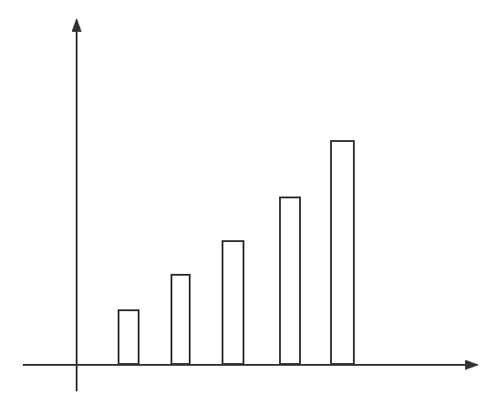

线性DP
数字三角形
. 7 . 3 8 . 8 1 0 . 2 7 4 4 4 5 2 6 5
给出上面的数字三角形，求出从三角形上顶点走到最下面的边的路径上数字和的最大值。
如果简单地从最上面搜索到最下面的边，时间复杂度是 \(O(2^n)\) 的，时间复杂度很高。
如果我们从下往上走的话，就可以在 \(O(n^2)\) 的时间复杂度内找到最大路径。
最长上升子序列
给一个长度为 \(N\) 的数列，求数值严格单调递增的子序列的长度最长是多少。
7 3 1 2 1 8 5 6
在上面这个例子中，最长的子序列就是 \(1 2 5 6\)。
设 \(dp[i]\) 表示以第 \(i\) 个数字结尾的最长上升子序列的长度。
状态转移方程：\(dp[i] = max(dp[j] + 1)\ (j = 1, 2, 3, \dots i - 1)\)
如果要求以 \(8\) 也就是 \(a_5\) 结尾的子串的最长上升子序列的长度，那就遍历前面所有的数，如果满足 \(a_i < a_5\ (i < 5)\) 那么就 \(dp[5] = max(dp[i] + 1)\)。
使用二分
同样设 \(dp[i]\) 表示以第 \(i\) 个数字结尾的最长上升子序列的长度。
对于上面简单的求法，发现在求的过程中有冗余。
7 3 1 2 1 8 5 6
还是这个例子，看长度为 \(1\) 的子序列有 \("3"\)，\("1"\)，\("2"\)，\(\dots\)。
如果要找长度为 \(2\) 的子序列，\(a_2 = 1\) 后面的每一个数字能够接在 \(a_1 = 3\) 后面的话就一定能接在 \(a_2 = 1\) 的后面，想对于 \(a_1 = 3\) 来说，\(a_2 = 1\) 更好，所以 \(a_1 = 3\) 的这个上升子序列就没有必要存下来。
所以在求以第 \(i\) 个数字结尾的子序列时，对于长度为 \(1\) 的子序列我们只要存一个就行了、对于长度为 \(2\) 的子序列我们只要存一个就行了、……
将所有长度的结尾值存下来。
且长度更长的子序列的结尾值也更大：
设第 \(i\) 数字之前的最长长度的子序列长度分别为 \(1, 2, 3, \dots\) 的子序列的结尾值分别为 \(a_1, a_2, a_3, \dots\)
假设 \(a_3 \leq a_2\)，最长长度子序列长度为 \(3\) 的子序列的第二个数字就一定比 \(a_2\) 要小，与我们假设的矛盾，因为我们假设的最长长度子序列长度为 \(2\) 的子序列结尾最小值是 \(a_2\)。
所以长度更长的子序列的结尾值更大。
那么在求以 \(a_i\) 结尾的最长上升子序列的长度时，使用二分查找前面所有长度的结尾值中第一个比 \(a_i\) 大的子序列的长度。
更新以 \(a_i\) 结尾的最长上升子序列的长度 \(+ 1\) 的结尾值 \(a_i\)。
最长公共子序列
子序列允许不连续。
给两个长度分别为 \(N, M\) 的字符串 \(A, B\)，求既是 \(A\) 的子序列又是 \(B\) 的子序列的字符串长度最长是多少。
状态定义：\(dp[i][j]\) 表示字符串 \(A\) 的长度为 \(i\) 的前缀子串与字符串 \(B\) 的长度为 \(j\) 的前缀子串的最长公共子序列。
状态计算（一共有四个状态转移）：
- 字符串 \(A\) 的长度为 \(i\) 的前缀子串与字符串 \(B\) 的长度为 \(j\) 的前缀子串的最长公共子序列包含字符串 \(A\) 的第 \(i\) 个字符，也包含字符串 \(B\) 的第 \(j\) 个字符。
所以 \(A[i] = B[j]\)，状态转移方程：\(dp[i][j] = dp[i - 1][j - 1] + 1\)。 - 字符串 \(A\) 的长度为 \(i\) 的前缀子串与字符串 \(B\) 的长度为 \(j\) 的前缀子串的最长公共子序列不包含字符串 \(A\) 的第 \(i\) 个字符，也不包含字符串 \(B\) 的第 \(j\) 个字符。
状态转移方程直接就是：\(dp[i][j] = dp[i - 1][j - 1]\)。 字符串 \(A\) 的长度为 \(i\) 的前缀子串与字符串 \(B\) 的长度为 \(j\) 的前缀子串的最长公共子序列不包含字符串 \(A\) 的第 \(i\) 个字符，包含字符串 \(B\) 的第 \(j\) 个字符。
状态转移方程是：\(dp[i][j] = dp[i - 1][j]\) 吗？我们先要知道这个方程表示什么，这个方程只能说明没包含字符串 \(A\) 的第 \(i\) 个字符，但没说明一定包含字符串 \(B\) 的第 \(j\) 个字符，它可能包含字符串 \(B\) 的第 \(j\) 个字符，也可能没包含字符串 \(B\) 的第 \(j\) 个字符。
而我们要求的是不包含字符串 \(A\) 的第 \(i\) 个字符，包含字符串 \(B\) 的第 \(j\) 个字符，所以 \(dp[i][j] = dp[i - 1][j]\) 与我们想要求的方程不完全等价，但是我们又找不到一个状态转移方程能够完美的表示我们的要求。
由于我们是求最大值，是 \(max\) 操作，所以我们可以使用这个方程。
如果我们要求两个集合的最大值，虽然我们得不到只包含集合一的方程，但我们能得到能完全包含集合一但又会包含一部分集合二的方程，我们是可以使用这个方程的，因为取 \(max\) 操作可以多取，只要不漏取就可以。
- 字符串 \(A\) 的长度为 \(i\) 的前缀子串与字符串 \(B\) 的长度为 \(j\) 的前缀子串的最长公共子序列包含字符串 \(A\) 的第 \(i\) 个字符，不包含字符串 \(B\) 的第 \(j\) 个字符。
与 \(3\) 同理，状态转移方程是：\(dp[i][j] = dp[i][j - 1]\)。
这时发现状态 \(2\) 一定会包含在状态 \(3\) 与状态 \(4\) 中，所以可以不考虑状态 \(2\) 的转移。
求最大值时，虽然我们不能划分成恰好不重不漏的子集，只要不遗漏就可以，允许重复。
#include <cstdio> #include <algorithm> using namespace std; const int maxn = 1e3 + 5; int n, m; char a[maxn], b[maxn]; int dp[maxn][maxn]; int main() { scanf("%d %d", &n, &m); scanf("%s %s", a + 1, b + 1); for (int i = 1; i <= n; ++ i) for (int j = 1; j <= m; ++ j) { dp[i][j] = max(dp[i - 1][j], dp[i][j - 1]); if (a[i] == b[j]) dp[i][j] = max(dp[i][j], dp[i - 1][j - 1] + 1); } printf("%d\n", dp[n][m]); return 0; }
编辑距离
给出两个字符串 \(A, B\)，将 \(A\) 经过若干次操作变成 \(B\)，可进行的操作有："删除"，"插入"，"替换"，问将 \(A\) 变为 \(B\) 至少需要进行多少次操作。
状态表示：\(dp[i][j]\) 表示将字符串 \(A\) 的长度为 \(i\) 的前缀子串变成字符串 \(B\) 的长度为 \(j\) 的前缀子串至少需要操作多少次。
状态计算：
将字符串 \(A\) 的长度为 \(i\) 的前缀子串的最后一个字符删掉后与字符串 \(B\) 的长度为 \(j\) 的前缀子串相等。
也就是字符串 \(A\) 的前 \(i - 1\) 的前缀子串已经经过 \(dp[i - 1][j]\) 次操作后与字符串 \(B\) 的前 \(j\) 的前缀子串相等了，所以要让字符串 \(A\) 变成字符串 \(B\)，操作数还要加上一个删除操作。
状态转移方程：\(dp[i][j] = dp[i - 1][j] + 1\)。
在字符串 \(A\) 的长度为 \(i\) 的前缀子串后面添加一个字符后与字符串 \(B\) 的长度为 \(j\) 的前缀子串匹配。
也就是添加之前，字符串 \(A\) 的长度为 \(i\) 的前缀子串已经和字符串 \(B\) 的长度为 \(j - 1\) 的前缀子串匹配了。
状态转移方程：\(dp[i][j] = dp[i][j - 1] + 1\)。
将字符串 \(A\) 的长度为 \(A\) 的前缀子串的最后面一个字符替换之后与字符串 \(B\) 的长度为 \(j\) 的前缀子串匹配。
也就是替换之前，字符串 \(A\) 的长度为 \(i - 1\) 的前缀子串和字符串 \(B\) 的长度为 \(j - 1\) 的前缀子串匹配了。
然后还要细分为两种情况：
- 字符串 \(A\) 的第 \(i\) 个字符等于字符串 \(B\) 的第 \(j\) 个字符。
状态转移方程：\(dp[i][j] = dp[i - 1][j - 1]\)。 - 字符串 \(A\) 的第 \(i\) 个字符不等于字符串 \(B\) 的第 \(j\) 个字符。
状态转移方程：\(dp[i][j] = dp[i - 1][j - 1] + 1\)。
- 字符串 \(A\) 的第 \(i\) 个字符等于字符串 \(B\) 的第 \(j\) 个字符。
#include <cstdio> #include <algorithm> using namespace std; const int maxn = 1e3 + 5; int n, m; char a[maxn], b[maxn]; int dp[maxn][maxn]; int main() { scanf("%d %s", &n, a + 1); scanf("%d %s", &m, b + 1); // 初始化 for (int i = 1; i <= n; ++ i) dp[i][0] = i; // 将a的前i个字符与b的前0个字符匹配，删i次 for (int j = 1; j <= m; ++ j) dp[0][j] = j; // 将a的前0个字符与b的前j个字符匹配，增j次 for (int i = 1; i <= n; ++ i) for (int j = 1; j <= m; ++ j) { dp[i][j] = min(dp[i - 1][j] + 1, dp[i][j - 1] + 1); if (a[i] == b[j]) dp[i][j] = min(dp[i][j], dp[i - 1][j - 1]); else dp[i][j] = min(dp[i][j], dp[i - 1][j - 1] + 1); } printf("%d\n", dp[n][m]); return 0; }